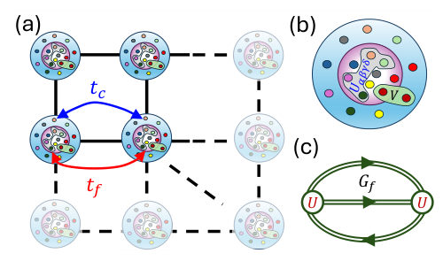

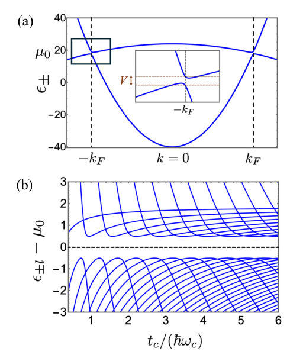
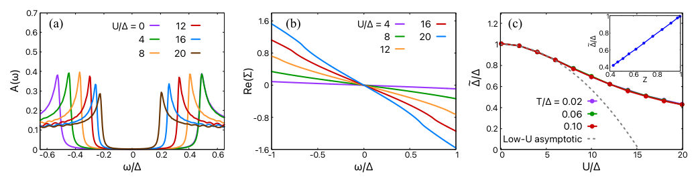
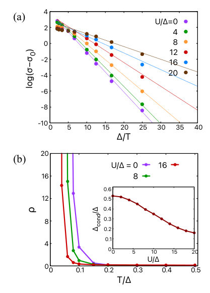
← Index · ← Previous · Next →
Authors: Paul G. Graf, Florian Matz, Markus Penz, Christian Schilling
Type: theory · Category: strongly correlated electrons · PDF: https://arxiv.org/pdf/2610.22134v1
Analysis basis: full PDF text, analyzed in chunks
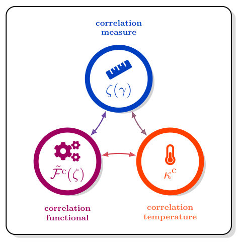
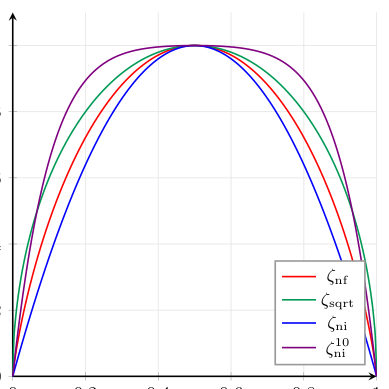
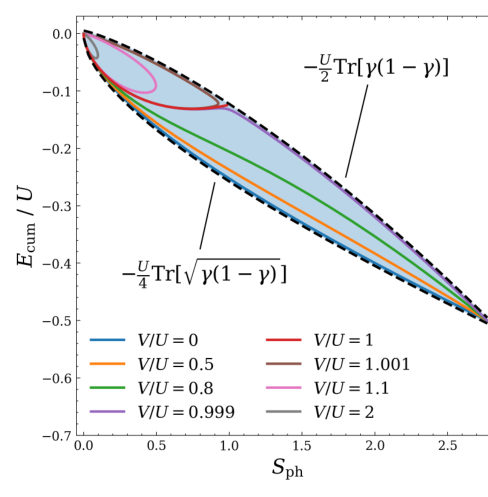
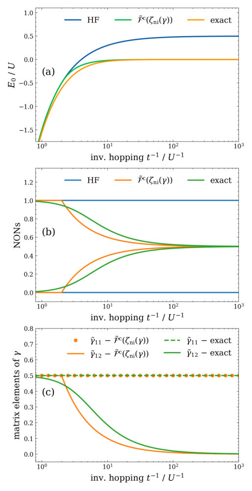
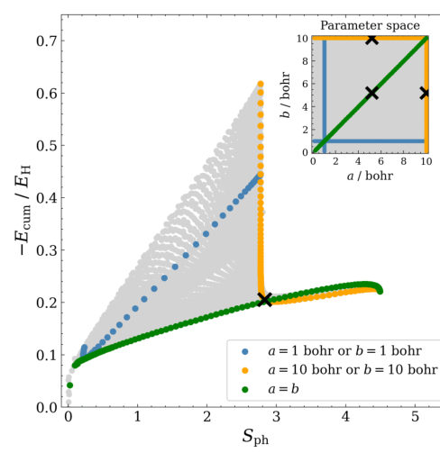
Summary. This paper introduces a systematic theoretical framework to tackle electron correlation by expressing the correlation energy as a function of a single, measurable quantity derived from the one-particle reduced density matrix (1RDM). This approach connects correlation measures, Reduced Density Matrix Functional Theory (RDMFT), and the concept of an effective 'correlation temperature'. It offers a path to solving complex correlation problems while maintaining computational efficiency at the mean-field level.
Why it may be interesting. The connection drawn between correlation measures, functional theory, and effective temperatures provides a powerful, unifying theoretical lens for understanding correlation effects in condensed matter systems, potentially simplifying complex many-body calculations.
Main problem. The central challenge is developing a systematic, computationally tractable framework to quantify and treat electron correlation energy in many-electron systems.
Main result. The authors propose modeling the correlation energy as a functional of a single correlation measure derived from the one-particle reduced density matrix (1RDM), introducing the concept of a 'correlation temperature'.
Method. The framework utilizes Reduced Density Matrix Functional Theory (RDMFT), approximating the correlation functional by making it dependent only on a chosen correlation measure ($\zeta$) derived from the 1RDM.
Model / system. The theory is developed for general N-electron systems, using the Hartree-Fock method as a starting point. Specific illustrations include the Hubbard dimer and small molecular systems.
Key observables. One-particle reduced density matrix (1RDM), Non-Orthogonal Natural Occupation Numbers (NONs), Nonfreeness ($\zeta_{nf}$), and the 'correlation temperature' ($\kappa_c$).
Important parameters / regimes. The correlation measure $\zeta$ and the corresponding correlation temperature $\kappa_c$.
Assumptions / limitations. The core assumption is that the correlation energy can be effectively parameterized by a single, well-defined correlation measure derived from the 1RDM, allowing the cost to remain at the mean-field level.
Figures summary. Figure 1 illustrates the conceptual link between a correlation measure $\zeta(\gamma)$ of the 1RDM, the coarse-grained correlation functional $ ilde{F}_c(\zeta)$, and the correlation temperature $\kappa_c$.
Paper structure. The paper first establishes the necessity of quantifying correlation via the 1RDM. It then develops the systematic framework by defining the correlation energy functional in terms of a measure $\zeta$. Finally, it illustrates the concepts analytically for the Hubbard dimer and numerically for molecular systems.
It is common wisdom that a better understanding of how to quantify electron correlation should lead to more efficient treatments of the correlation problem. Here, we not only substantiate this view but turn it into a concrete, systematic framework for ground states. Since prominent correlation measures such as the nonfreeness depend only on the one-particle reduced density matrix, modeling the correlation energy as a function of such a measure naturally places the framework within reduced density matrix functional theory, while keeping the cost at mean-field level. Strikingly, the variable conjugate to the measure emerges as a ``correlation temperature'', thereby connecting correlation measures, functional theory, and effective temperatures. The framework rationalizes methods such as i-DMFT, and we illustrate its key concepts analytically for the Hubbard dimer and numerically for small molecular systems. This brings a fundamental question within reach: how much of the correlation problem can be solved at mean-field cost?
Authors: Abhisek Samanta, Mohit Randeria, Sumilan Banerjee
Type: theory · Category: strongly correlated electrons · PDF: https://arxiv.org/pdf/2610.20734v1
Analysis basis: full PDF text, analyzed in chunks




Summary. This work analyzes quantum oscillations in a Kondo insulator using a solvable model incorporating strong SYK interactions. By deriving generalized Lifshitz-Kosevich formulae, the authors show that interactions strongly modify the SdH oscillation amplitude while leaving the dHvA frequency and amplitude largely unchanged. This highlights a fundamental difference in how electron correlations affect different measurable quantities in correlated insulators.
Why it may be interesting. The clear separation of interaction effects between two different types of quantum oscillations (SdH vs dHvA) provides deep insight into the nature of quasiparticle excitations in strongly correlated insulating states.
Main problem. The study investigates how strong electron-electron interactions affect quantum oscillations (QOs) in a Kondo insulator.
Main result. The analysis reveals a dichotomy: interactions strongly enhance the amplitude of SdH (LE-DOS) oscillations but leave the dHvA oscillation frequency and amplitude essentially unaffected.
Method. The authors use the large-N limit to solve a generalized periodic Anderson model containing Sachdev-Ye-Kitaev (SYK) interactions, deriving generalized Lifshitz-Kosevich formulae.
Model / system. The system is a Kondo insulator modeled by a generalized periodic Anderson model on a 2D lattice, incorporating SYK random four-fermion interactions at each site. The analysis is performed in the large-N limit.
Key observables. Low-energy density of states (SdH) and magnetization (dHvA) quantum oscillation frequencies and amplitudes.
Important parameters / regimes. Interaction strength ($U$), hybridization gap ($\Delta$), temperature ($T$), and the large-$N$ limit.
Assumptions / limitations. The analysis relies on the large-$N$ limit and assumes the insulating state remains stable even for interaction strengths much larger than the non-interacting gap.
Figures summary. Figure 1 illustrates the model structure involving SYK dots and the periodic Anderson model. Other figures likely compare QO behavior under different interaction strengths.
Paper structure. The paper introduces the generalized model, solves it in the large-N limit using saddle-point equations, derives generalized LK formulae, and presents the distinct renormalization effects on SdH versus dHvA QOs.
We study the effects of interactions on the low-energy density of states (SdH) and magnetization (dHvA) quantum oscillations (QOs) in a Kondo insulator. Toward this end we introduce a generalization of the periodic Anderson model with Sachdev-Ye-Kitaev (SYK) interactions at each site that is exactly solvable in the large-$N$ limit, where $N$ is the number of flavors of the heavy $f$ electrons. We show analytically and numerically that the insulating state remains stable in terms of spectrum, thermodynamics, and transport at low temperatures even for interaction strengths much larger than non-interacting band gap of the hybridization-gap insulator. We analytically derive generalizations of Lifshitz-Kosevich (LK) formulae, distinct for the SdH and dHvA QOs, for the interacting insulator. We find that the SdH oscillation frequencies, $F_0\pm δF$, corresponding to the conduction and valence band edges, can be weakly renormalized by interaction relative to their non-interacting values. In contrast, dHvA QO frequency $F_0$ is not renormalized by interactions, and remains the same as that for the non-interacting unhybridized bands. The QO amplitudes show a remarkable difference: the dHvA amplitude is essentially unaffected by interactions, while the SdH amplitude is strongly enhanced due to gap renormalization.
Authors: Andres Arcia-Lopez, Marek Gluza, Yudai Suzuki, Cyrus Mostajeran
Type: theory · Category: quantum information and computing · PDF: https://arxiv.org/pdf/2610.21782v1
Analysis basis: full PDF text, analyzed in chunks
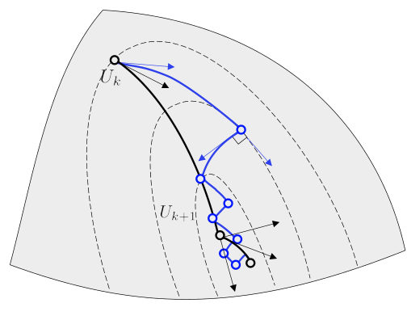
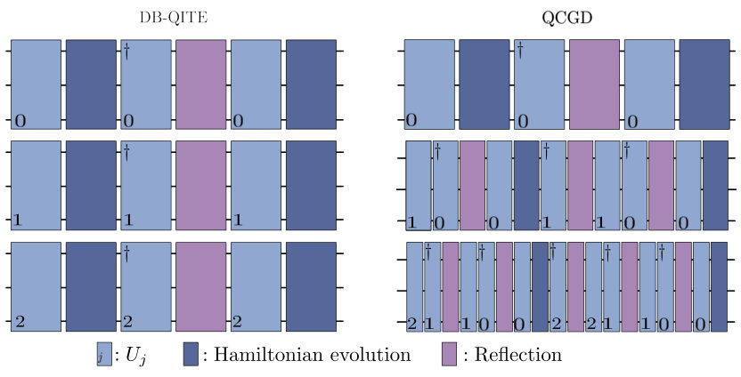
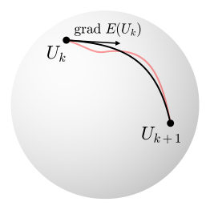
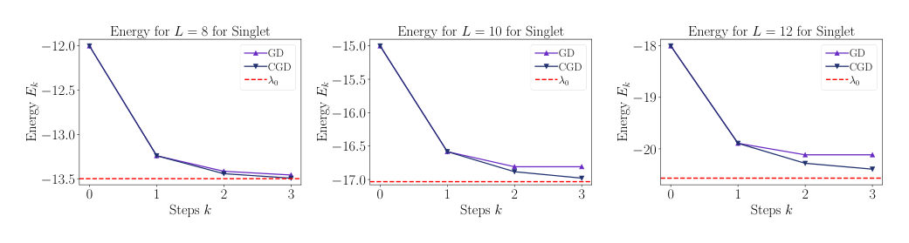
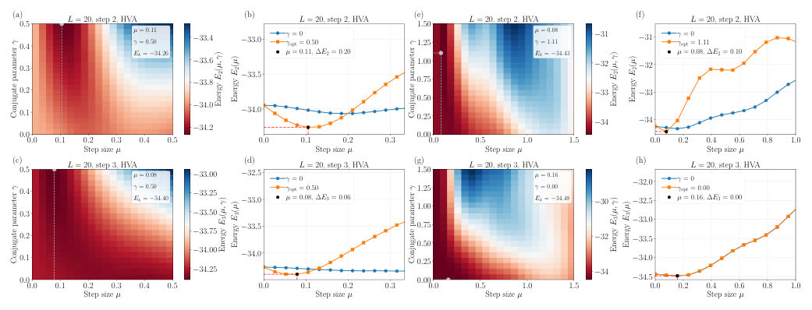
Summary. This work proposes Quantum Conjugate Gradient Descent (QCGD) to improve ground-state preparation algorithms by incorporating memory effects from classical optimization theory. QCGD shows faster convergence per step than existing methods like DB-QITE, though this improvement increases the circuit depth required for each update. The paper analyzes the critical trade-off between achieving faster convergence and managing the resulting exponential growth in circuit complexity.
Why it may be interesting. It provides a concrete, theoretically derived quantum algorithm improvement for a fundamental problem in quantum simulation, directly impacting the resource estimates for near-term quantum hardware.
Main problem. The paper addresses the challenge of ground-state preparation (GSP) for Hamiltonians, which is a computationally hard problem.
Main result. The proposed Quantum Conjugate Gradient Descent (QCGD) achieves faster convergence per iteration than existing methods like DB-QITE, although this comes with a trade-off of increased circuit depth per step.
Method. It introduces QCGD, a quantum-compatible adaptation of Riemannian Conjugate Gradient Descent, which incorporates memory from previous search directions into the optimization process.
Model / system. The focus is on optimizing the energy expectation value $E(U)$ by minimizing it along geodesics on the unitary manifold $U(N)$ using unitary evolution.
Key observables. Energy expectation value $E_k$, convergence rate, and circuit cost quantified by gate counts and circuit depth.
Important parameters / regimes. The trade-off between convergence rate and implementation complexity (circuit depth), particularly in the early fault-tolerant regime.
Assumptions / limitations. The derivation relies on approximations such as the group commutator expansion and Trotter-Suzuki formulas to translate classical Riemannian CGD rules into quantum unitary operations.
Figures summary. Figures compare the energy convergence of QCGD versus DB-QITE, and also compare resource costs (gate counts, circuit depth) across increasing system sizes, showing QCGD's resource overhead.
Paper structure. The paper builds from the geometric formulation of GSP, introduces the existing DB-QITE method, derives the QCGD update rules by adapting Riemannian CGD, and concludes with complexity and resource analysis comparing the two approaches.
Riemannian optimization provides a natural geometric framework for designing quantum algorithms for ground-state preparation, most notably through quantum imaginary-time evolution. However, existing geometry-aware approaches primarily employ steepest-descent updates, leaving more advanced methods from classical Riemannian optimization largely unexplored. In this work, we introduce quantum conjugate gradient descent (QCGD), a quantum-compatible implementation of Riemannian conjugate gradient that combines the steepest descent direction with information retained from previous search directions. In our numerical experiments, the proposed approach achieves faster convergence per iteration than the baseline double-bracket quantum imaginary-time evolution (DB-QITE) algorithm, and we quantify the associated circuit cost with gate counts produced by Qrisp. This improvement, however, comes at the cost of increased circuit depth for each update step, revealing a trade-off between convergence rate and implementation complexity. Nevertheless, since the circuit depth for those algorithms grows exponentially with the number of iterations, the proposed method may offer practical advantages, particularly in the early fault-tolerant regime.
Authors: Silvie Illésová, Vojtěch Novák, Martin Beseda
Type: both · Category: other · PDF: https://arxiv.org/pdf/2610.21003v1
Analysis basis: full PDF text, analyzed in chunks
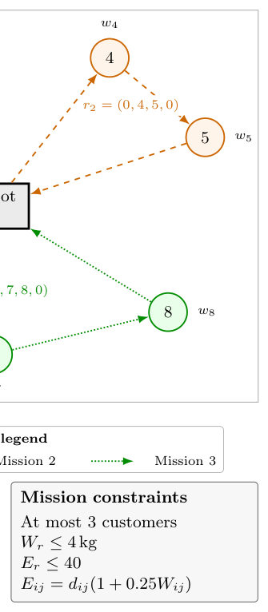
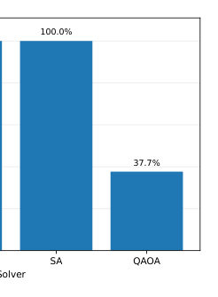
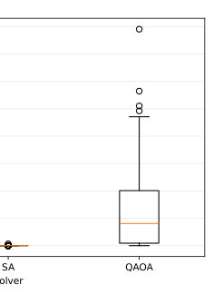
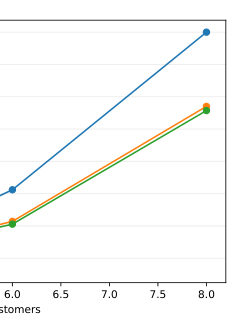
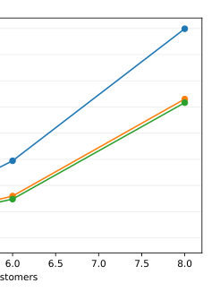
Summary. This paper tackles drone delivery planning, a complex optimization problem, by proposing a hybrid quantum-classical solution. It uses classical preprocessing to filter out physically impossible routes, drastically reducing the size of the resulting QUBO model. The results show that this classical filtering step provides the most significant practical advantage, improving the performance of quantum solvers like SA.
Why it may be interesting. While the core application is logistics, the methodology involves mapping a constrained combinatorial problem onto a QUBO framework and analyzing the computational benefit of classical filtering before applying quantum optimization techniques, which is relevant to quantum algorithm design.
Main problem. The paper addresses the complex combinatorial optimization problem of drone delivery planning, which involves routing decisions subject to operational constraints like payload capacity and limited energy.
Main result. The primary benefit of the hybrid quantum-classical approach is found in classical feasibility preprocessing, which significantly reduces the size of the QUBO search space and improves the performance of subsequent quantum optimization methods like SA.
Method. A hybrid quantum-classical methodology is employed: classical preprocessing filters out infeasible mission candidates, reducing the problem to a smaller QUBO model solved by exact enumeration, Simulated Annealing (SA), or QAOA.
Model / system. The system models drone delivery missions involving a set of customers, formulated as a QUBO optimization problem. Constraints include payload capacity and total energy consumption, which are handled via preprocessing or penalty terms.
Key observables. Solution quality (feasibility, optimality gap), reduction in QUBO variables and quadratic interactions, and computational runtime.
Important parameters / regimes. Maximum payload capacity ($W_{ ext{max}}$), available energy capacity ($E_{ ext{max}}$), and the size of the problem instance ($n$).
Assumptions / limitations. The main assumption is that separating deterministic feasibility checks (classical) from the combinatorial selection (QUBO) yields practical benefits. Limitations include using synthetic instances and restricting QAOA to shallow statevector simulations.
Paper structure. The paper introduces the problem, details the hybrid methodology (classical preprocessing followed by QUBO solving), presents results comparing various solvers (MILP, SA, QAOA), and concludes by emphasizing the role of preprocessing in complexity reduction.
Drone-delivery planning combines routing decisions with operational constraints such as payload capacity and limited onboard energy, resulting in combinatorial optimization problems that can become costly to encode directly in binary form. This work investigates a hybrid quantum--classical approach in which candidate drone missions are generated and evaluated classically before constructing a quadratic unconstrained binary optimization (QUBO) model for mission selection. Payload- and energy-infeasible missions are removed during preprocessing, while the reduced QUBO is solved using exact enumeration, simulated annealing (SA), and the Quantum Approximate Optimization Algorithm (QAOA), with mixed-integer linear programming (MILP) used as a classical reference. Experiments on controlled synthetic delivery instances evaluate solution quality, the effect of preprocessing, and computational scaling. Exact QUBO optimization reproduces the MILP optimum on the evaluated small instances, while SA achieves $100\%$ feasibility with a median optimality gap of $0\%$. Combined payload-and-energy preprocessing reduces the mean number of QUBO variables by $29.60\%$ and quadratic interactions by $49.20\%$, while reducing mean SA runtime by $31.26\%$. In contrast, the evaluated shallow statevector-based QAOA configuration achieves lower feasibility and is restricted to small QUBO instances. These results indicate that, in the considered setting, the main practical benefit of the hybrid architecture comes from classical feasibility preprocessing that reduces the binary search space before QUBO-based optimization.
Authors: Marten Reehorst
Type: theory · Category: statistical mechanics · PDF: https://arxiv.org/pdf/2610.20701v1
Analysis basis: full PDF text, analyzed in chunks
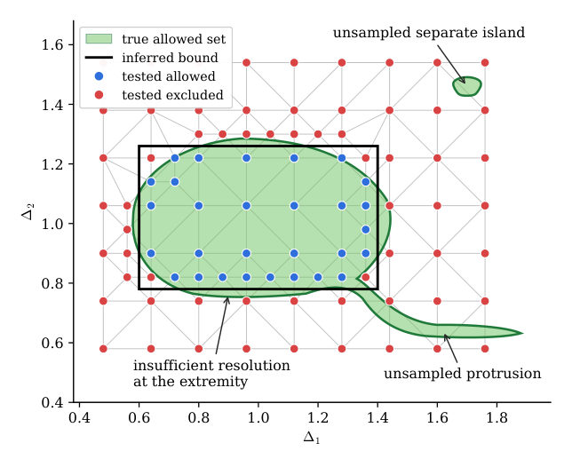
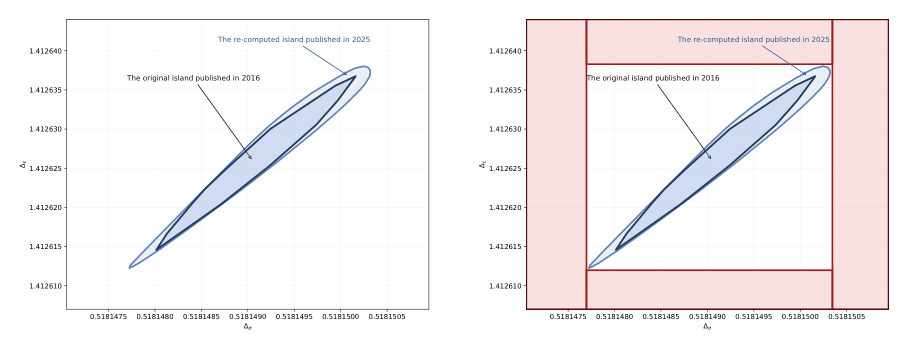
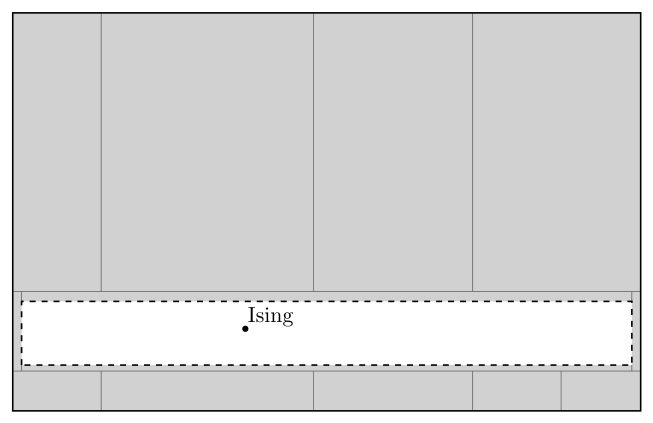
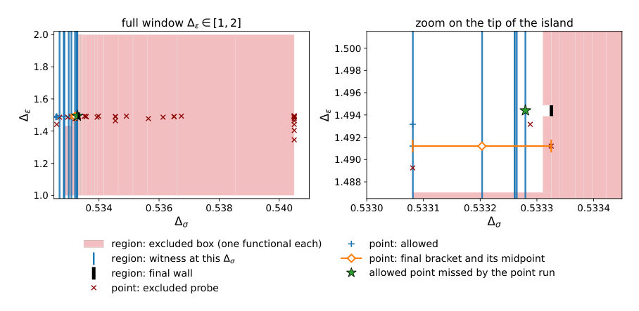
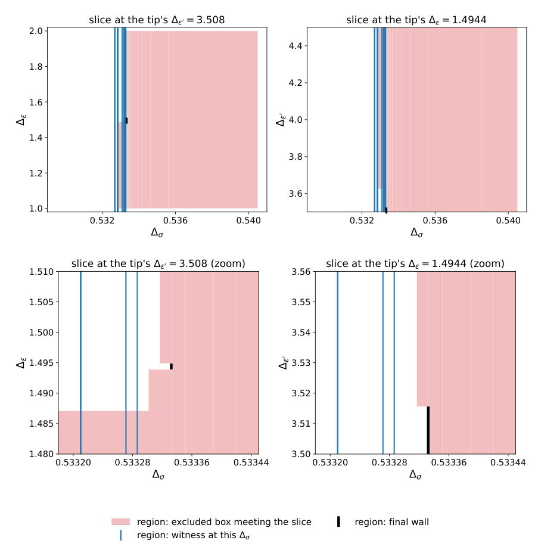
Summary. This work provides the first mathematically rigorous bounds on the critical exponents of the 3D Ising CFT by upgrading the numerical conformal bootstrap. The authors overcome limitations in previous methods—such as relying on sampled points or floating-point arithmetic—by implementing exact arithmetic and region-based positivity certificates. This establishes a new standard for theoretical rigor in critical phenomena studies.
Why it may be interesting. While focused on CFT, the rigorous mathematical techniques developed for certifying positivity on continuous parameter regions and handling infinite sums are highly relevant to bounding parameters in quantum field theories and critical phenomena.
Main problem. To elevate numerical conformal bootstrap bounds from mere sampled points to mathematically rigorous theorems.
Main result. The authors certify exclusion regions in the critical exponent parameter space $(\Delta_\sigma, \Delta_\epsilon)$, providing rigorous two-sided bounds on the 3D Ising CFT critical exponents $\eta$ and $ u$.
Method. The methodology involves developing a multi-stage certification pipeline using exact arithmetic (in $\mathbb{Q}(\sqrt{2})$), Bernstein-basis positivity certificates, and careful handling of infinite spin tails and truncation errors.
Model / system. The study focuses on the 3D Ising Conformal Field Theory (CFT), analyzing its four-point correlation function $\langle\sigma\sigma\sigma\sigma angle$ via crossing-symmetry equations.
Key observables. Critical exponents ($\eta$ and $ u$), and the parameters $(\Delta_\sigma, \Delta_\epsilon)$ defining the conformal block spectrum.
Important parameters / regimes. The parameter space $(\Delta_\sigma, \Delta_\epsilon)$ and the specific values of the critical exponents.
Assumptions / limitations. The certification relies on a 'trusted computing base' of axioms and the assumption that the 3D Ising CFT is indeed conformal, though uniqueness is not proven.
Figures summary. Figures illustrate how point-based sampling can fail to capture true allowed regions, and how region bounds provide superior constraints compared to older point-based charting methods.
Paper structure. The paper systematically addresses four gaps in previous work (points vs. regions, finite vs. infinite spins, approximations vs. true blocks, floating point vs. exact arithmetic) before applying the full rigorous machinery to the 3D Ising model.
Numerical conformal bootstrap bounds are commonly called rigorous, yet as published they are not theorems: they hold at sampled points rather than on regions of parameter space, for truncated rational approximations of the conformal blocks, for a finite list of spins, and up to floating-point rounding. We close all four gaps. We show how to search efficiently for functionals positive on regions, including external-dimension space; how positivity on the large-spin crossing vectors can be imposed as such a region constraint; how new analytic bounds on the conformal-block recursion relations give functionals positive on the true, untruncated crossing vectors; and how to certify the positivity of these functionals in exact arithmetic. The certification rests on Bernstein-basis positivity certificates in up to three variables, exact arithmetic in $\mathbb{Q}(\sqrt2)$, a compactified treatment of the infinite spin tail, and an explicit bound on the difference between the true blocks and their truncations, so that infinitely many positivity conditions reduce to finitely many machine-checked sign conditions. As a flagship application we certify an exclusion region in the $(Δ_σ,Δ_ε)$ plane: for $Δ_σ\in[0.505,0.5405]$ all of $Δ_ε\in(1/2,3]$ is excluded except a small rectangle containing the 3d Ising island, giving rigorous two-sided bounds on the critical exponents $η$ and $ν$ under explicitly stated spectrum assumptions. The analytic inputs for the mixed $σ$-$ε$ system, which would remove the spin-2 gap assumption, are also proved. The same methods prevent common practical failure modes and can make bootstrap searches faster: region bounds turn the mapping of an island into a handful of one-dimensional bisections. The essential code to reproduce the search and the certification, and all machine-checkable certificates, are released.
Authors: Michael Poppel, David Bucher, Maximilian Zorn, Markus Baumann, Sebastian Wölckert, Claudia Linnhoff-Popien, Philipp Altmann, Jonas Stein
Type: theory · Category: quantum information and computing · PDF: https://arxiv.org/pdf/2610.21778v1
Analysis basis: full PDF text, analyzed in chunks
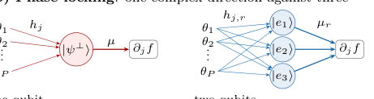
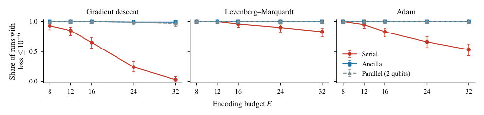
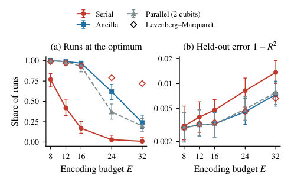
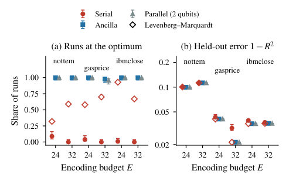
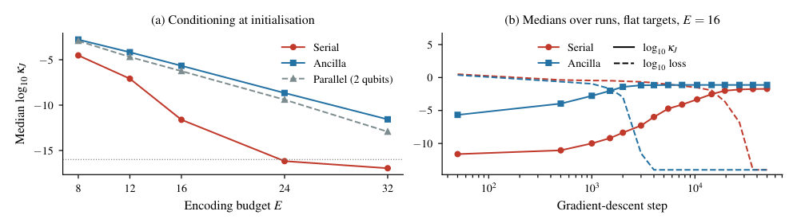
Summary. This paper rigorously compares single-qubit versus multi-qubit quantum circuits designed to represent the same function. It proves that while they are equally expressive, the single-qubit serial structure suffers from 'phase-locking,' which geometrically constrains its parameter movement. This constraint leads to significantly poorer convergence during first-order training compared to multi-qubit controls.
Why it may be interesting. The findings provide concrete evidence that the geometric structure of the quantum circuit (depth vs. width) imposes measurable, non-trivial constraints on the optimization landscape, which is crucial for designing efficient quantum machine learning models.
Main problem. The paper compares the training difficulty of single-qubit versus multi-qubit variational quantum circuits (VQCs) that are structurally different but functionally equivalent (same spectrum). It investigates whether the structural trade-off between width and depth impacts optimization convergence.
Main result. The exchange of width for depth is not free in first-order training; the single-qubit serial circuit exhibits 'phase-locking' that severely limits its tangent directions compared to multi-qubit controls, leading to poorer optimization performance.
Method. The authors use theoretical analysis of the Jacobian structure (comparing tangent directions) alongside extensive numerical benchmarking using multiple optimization algorithms (Adam, LM, GD) on various target functions.
Model / system. The model involves Variational Quantum Circuits (VQCs) using angle encoding to implement truncated Fourier series. The comparison is between serial (single-qubit) and multi-qubit (ancilla/parallel) circuit architectures.
Key observables. Convergence rate (runs out of 100 reaching optimum), held-out error ratio, and the dimension of the tangent space ($ ext{dim T}$).
Important parameters / regimes. Encoding budget ($E$), number of qubits ($N$), and optimization algorithm (Adam, LM, GD).
Assumptions / limitations. The comparison focuses on optimization difficulty, not a loss of expressivity, and assumes the cost is due to optimization geometry rather than vanishing gradients.
Figures summary. Figures illustrate chain lengths for different circuit types and demonstrate the phase-locking mechanism (one complex direction for $N=1$). Tables summarize convergence rates and error ratios across various targets and optimizers.
Paper structure. The paper first establishes the functional equivalence of the circuits (same spectrum) and then dives into the theoretical analysis of the Jacobian structure, highlighting the constraint imposed by phase-locking in the serial case. This is followed by extensive numerical results comparing optimization performance across different real-world and synthetic targets.
Angle-encoded variational quantum circuits implement truncated Fourier series. For one-dimensional inputs, a single-qubit re-uploading (serial) circuit represents every function that a multi-qubit circuit with the same encoding budget $E$ can; we find that this exchange of width for depth is not free in first-order training. Because its state lives on the Bloch sphere, all parameters of the serial circuit move the state, at each input, along one complex direction, which we call \emph{phase-locking}. We prove that this costs no Fourier direction but leaves no direction to spare: however many parameters it has, the serial circuit has at most $2E+2$ tangent directions, one more than its $2E+1$ Fourier coefficients need, while a two-qubit control with the same encoding budget and model class generically has at least $6E+6$. The cost in training is measured against this control, as the number of runs out of 100 that reach the optimum within a fixed step budget. On an exact loss with flat-spectrum targets the gap grows with $E$; at $E=32$ the serial circuit converges in 3, 53 and 83 runs under gradient descent, Adam and Levenberg--Marquardt, the control in 99, 100 and 100. On three real-world series, at matched parameter counts, the serial circuit reaches the least-squares optimum in at most 9 runs under Adam and in 32 to 93 under Levenberg--Marquardt, the control in at least 98 and in all 100; its held-out error is up to about $1.5$ times that of the control under Adam, but no larger in the typical run under Levenberg--Marquardt.
Authors: Hidetsugu Sakaguchi, Boris Malomed
Type: theory · Category: other · PDF: https://arxiv.org/pdf/2610.21044v1
Analysis basis: full PDF text, analyzed in chunks
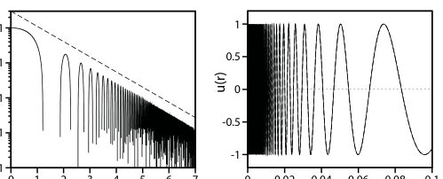
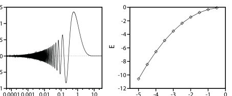
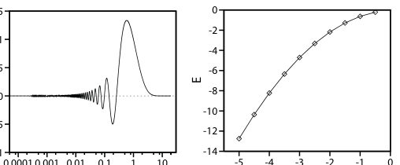

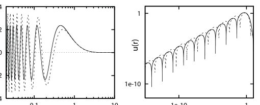
Summary. This work analyzes quantum systems with inverse-power potentials, focusing on the issue of quantum collapse (QC) which causes the loss of the ground state. By mathematically regularizing the potential, the authors demonstrate that the continuous spectrum associated with the singularity is replaced by a discrete, physically meaningful spectrum.
Why it may be interesting. The study of singular potentials and their boundary condition dependence is fundamental to understanding the mathematical rigor required for quantum mechanics in extreme physical regimes, which is relevant for modeling interactions in quantum field theory or condensed matter systems near singularities.
Main problem. The paper investigates the behavior of quantum systems governed by inverse-power potentials, specifically addressing the phenomenon of quantum collapse (QC) and the nature of the energy spectrum near the origin.
Main result. The singular potential leads to a continuous spectrum of bound states, but introducing a hard core or regularizing the potential restores a discrete spectrum and the ground state.
Method. The analysis employs analytical techniques, including coordinate transformations (e.g., $x = \ln(1/r)$), asymptotic analysis, and numerical simulations (e.g., Runge-Kutta) to solve the radial Schrödinger equation.
Model / system. The system is described by the time-independent Schrödinger equation with an inverse-power potential $U(r) = -U_0/(2r^n)$. Extensions include nonlinear terms (GPE) and hard-core modifications.
Key observables. Energy eigenvalues ($E$), wave functions $u(r)$, and the ground state energy ($E_{GS}$).
Important parameters / regimes. Potential strength ($U_0$), exponent ($n$), and the regularization distance ($r_0$).
Assumptions / limitations. The analysis relies on comparing the singular case (continuous spectrum) with regularized cases (discrete spectrum) and examining the implications of boundary conditions at $r=0$.
Figures summary. Figures illustrate the comparison between numerical and analytical solutions for wave functions $u(r)$ across different dimensions (1D, 2D, 3D) and show the dependence of $E_{GS}$ on the hard-core radius $r_0$.
Paper structure. The paper progresses from establishing the general singular problem and the concept of QC, through mathematical transformations and asymptotic solutions, to analyzing the physical consequences of regularization (hard cores) which restore discrete spectra.
Quantum collapse (QC) occurs under the action of the inverse-power potential U(r)=-U_{0}/(2r^{n}) in the framework of the Schroedinger equation. The corresponding stationary wave functions feature an infinite number of spatial oscillations at $r\rightarrow 0$. The ground state (GS) is missing in the presence of the QC, but the available bound states at finite energies may be physically relevant, as they are normalizable. This work aims to produce singular stationary wave functions. The analytical findings represent an asymptotic form of the stationary wave functions at $r\rightarrow 0$, which fill a continuous spectrum, and some exact solutions for the wave functions, obtained under appropriate conditions. As a regularized version, we also consider the potential truncated at a finite difference from the center. The regularized wave functions feature a finite number of spatial oscillations, the missing GS reappears, and the spectrum of the bound states is discrete.
Authors: Nidhal Mghirbi, Seth Douglas
Type: theory · Category: quantum information and computing · PDF: https://arxiv.org/pdf/2610.20775v1
Analysis basis: full PDF text, analyzed in chunks
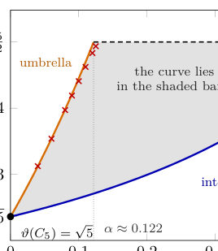
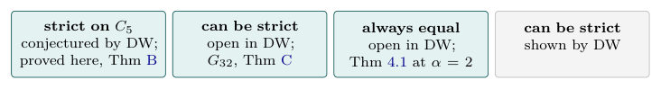
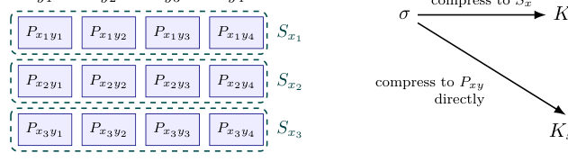
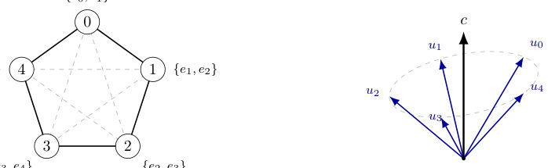
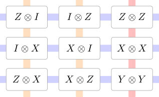
Summary. This paper significantly expands the understanding of the entanglement-assisted spectrum of graphs by identifying a continuous family of parameters, $\vartheta_\alpha$. These parameters interpolate between known quantum information measures like the Holevo capacity and simulation cost. The work rigorously proves these new parameters are fundamental elements of the spectrum, unifying several previously disparate results in quantum information theory.
Why it may be interesting. This work provides a deep, quantitative link between algebraic graph theory (Lovász number) and fundamental measures of quantum information (capacities, entanglement), suggesting a unified mathematical structure governing these physical limits.
Main problem. To extend the known elements of the entanglement-assisted asymptotic spectrum of graphs, $X(G, \leq^*)$, which is defined by graph parameters additive under disjoint unions and multiplicative under strong products.
Main result. The authors prove that a continuous family of graph parameters, $\vartheta_\alpha(G)$ for $\alpha \in [0, 2]$, all belong to this spectrum, establishing a continuum beyond the previously known Lovász number.
Method. The analysis involves defining the family $\vartheta_\alpha$ using Petz-Rényi divergences of order $\alpha$ and proving its properties (like multiplicativity) by relating it to exact nesting identities for compressions.
Model / system. The study uses graph theory as a mathematical framework to model quantum information concepts, specifically analyzing entanglement-assisted channels and capacities associated with graph structures.
Key observables. Entanglement-assisted Shannon capacity ($\Theta^*$), the Lovász number ($\vartheta$), minimal Holevo capacity ($C_{\min}$), and the simulation cost ($\Sigma$).
Important parameters / regimes. The continuous parameter $\alpha \in [0, 2]$ that interpolates between different information radii (e.g., $\alpha=0, 1, 2$).
Assumptions / limitations. The analysis relies on the mathematical structure of Petz-Rényi divergences and the ability to prove multiplicativity under strong products for channels that do not necessarily factor.
Figures summary. Figure 1 illustrates the continuous curve connecting $\sqrt{5}$ and $5/2$ for the five-cycle ($C_5$), while Figure 2 summarizes the status of various bounds connecting the different order parameters.
Paper structure. The paper first introduces the spectrum and the continuous family $\vartheta_\alpha$. It then proves that all members of this family lie within the spectrum. Subsequent sections establish specific values (like for $C_5$) and compare $\Sigma(G)$ against other graph invariants like the projective rank $\xi_f(G)$.
Li and Zuiddam's entanglement-assisted asymptotic spectrum of graphs consists of the normalized graph parameters that are additive under disjoint unions, multiplicative under strong products and monotone under entanglement-assisted cohomomorphisms; the entanglement-assisted Shannon capacity is their pointwise minimum. To our knowledge, the Lovász number $\vartheta$ was its only known element. We find a continuum of others. Three quantities of Duan and Winter, $\log_2\vartheta$, the minimal Holevo capacity $C_{\min}$ and the logarithm of the no-signalling simulation cost $Σ$, are the smallest information radii of classical-quantum channels compatible with a graph, measured with Petz-Rényi divergences of orders $0$, $1$ and $2$. At order zero this is due to Schrijver (as credited by Dalai) and to Duan and Winter; at order one it is the min-max formula for the Holevo capacity. Interpolating in the order gives a family $\vartheta_α$, $0\leα\le2$, and we prove that every member lies in the spectrum. The main step, multiplicativity under strong products for channels that need not factor, follows from an exact nesting identity for compressions. Sandwiched Rényi radii of order $β\in[1/2,\infty]$ give the same family, at $α=2-1/β$. On the five-cycle the family takes every value in $[\sqrt5,5/2]$. A Hilbert-Schmidt inequality for the pentagon gives $C_{\min}(C_5)=\log_2(5/2)$, proving a conjecture of Duan and Winter. We also settle the two open links of their inequality chain: the graph-level no-signalling simulation rate always equals its single-letter value $\log_2Σ(G)$, and a 32-vertex graph from the Mermin-Peres magic square has $C_{\min}<\log_2Σ$, certified in exact rational arithmetic. Finally, $Σ$ never exceeds the projective rank of the complement; a rank inequality for the same square makes this strict on a 1440-vertex graph.
Authors: Qiang Gao, Taige Wang
Type: theory · Category: strongly correlated electrons · PDF: https://arxiv.org/pdf/2610.21317v1
Analysis basis: full PDF text, analyzed in chunks
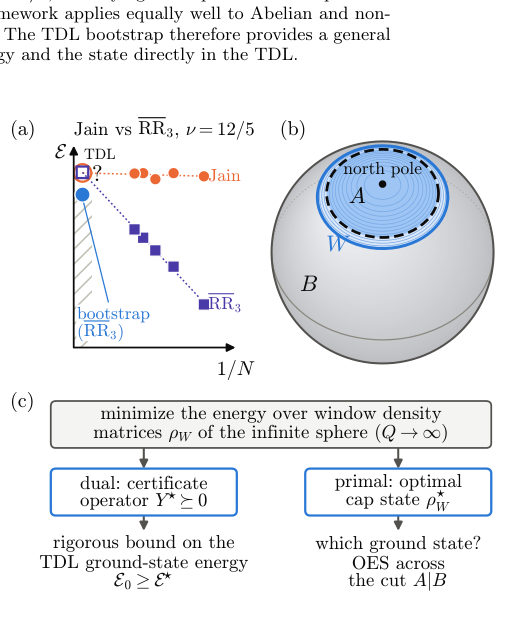
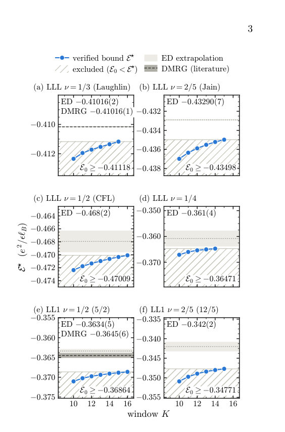
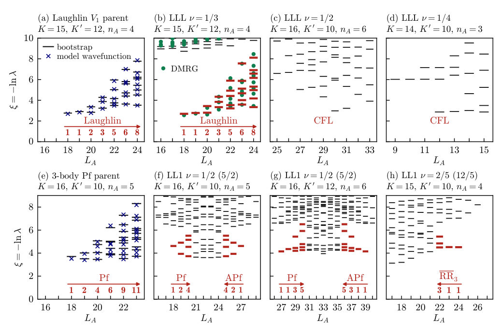
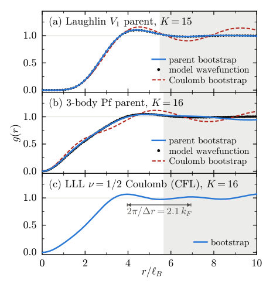
Summary. This work introduces a quantum many-body bootstrap method to solve for the ground states of strongly interacting Fractional Quantum Hall systems directly in the thermodynamic limit. By formulating the problem as a convex optimization, the authors derive rigorous lower bounds on the energy and accurately diagnose the topological order of the system. This provides a general solver applicable across various quantum Hall regimes.
Why it may be interesting. The rigorous, non-variational nature of the bootstrap provides a powerful, general tool for determining ground states in strongly correlated electron systems where traditional numerical methods struggle with the thermodynamic limit.
Main problem. The paper addresses the challenge of determining the ground state energy and structure of strongly interacting Fractional Quantum Hall (FQH) systems directly in the thermodynamic limit (TDL).
Main result. The developed bootstrap method successfully resolves the ground states at previously uncharacterized fillings ($ u=1/4$ and $ u=12/5$), identifying a composite Fermi liquid and $\overline{\mathrm{RR}}_3$ topological order, respectively.
Method. A quantum many-body bootstrap formulated as a convex optimization problem (SDP) is used to derive rigorous lower bounds on the ground-state energy, circumventing the need for finite-size extrapolation.
Model / system. The focus is on FQH systems, modeled by projecting the Hamiltonian onto a single partially filled Landau level. The method is general and applies to both Abelian and non-Abelian states.
Key observables. Ground-state energy per particle ($E_0$), Orbital Entanglement Spectrum (OES), and pair-correlation functions ($g(r)$).
Important parameters / regimes. Filling fractions ($ u$), Landau level indices (LLL vs. LL1), and the thermodynamic limit (TDL).
Assumptions / limitations. The method assumes that the ground state can be characterized by local correlation constraints within a defined 'polar window' ($W$), allowing for a rigorous lower bound calculation.
Figures summary. Figures compare the bootstrap energy bounds against ED and DMRG extrapolations across various fillings ($ u$), and show OES and pair correlation function diagnostics for state identification.
Paper structure. The paper introduces the TDL bootstrap method via SDP optimization, validates it against known FQH models (Laughlin, Moore-Read), and then applies it to resolve the ground states at novel fillings, comparing results against established numerical benchmarks.
Strongly interacting ground states are usually computed in finite systems and then extrapolated to the thermodynamic limit (TDL). Here we develop a quantum many-body bootstrap that solves fractional quantum Hall ground states directly in the TDL. The method gives rigorous and quantitatively tight lower bounds on the ground-state energy and identifies the ground-state structure and topological order. For Laughlin and Pfaffian parent Hamiltonians, it reproduces exact pair-correlation functions and low-lying orbital entanglement spectrum (OES) nearly level by level. For Coulomb interactions, the rigorous TDL energy bounds closely match thermodynamic estimates from exact diagonalization and density-matrix renormalization group (DMRG) extrapolations, and the local diagnostics recover established Laughlin and Moore--Read OES counting and Friedel oscillations of the composite Fermi liquid. Beyond these benchmarks, the bootstrap resolves the thermodynamic ground states at $ν=1/4$ and $ν=12/5$, identifying a composite Fermi liquid and $\overline{\mathrm{RR}}_3$ topological order, respectively. The same framework applies equally well to Abelian and non-Abelian, gapped and gapless quantum Hall states. The TDL bootstrap therefore provides a general ground-state solver that determines both the energy and the state directly in the TDL.
Authors: C. M. Wilson, R. Ganesh, K. V. Samokhin
Type: theory · Category: disordered systems and neural networks · PDF: https://arxiv.org/pdf/2610.20713v1
Analysis basis: full PDF text, analyzed in chunks

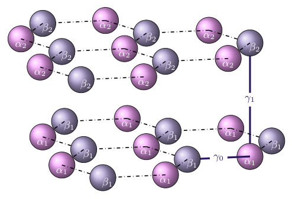
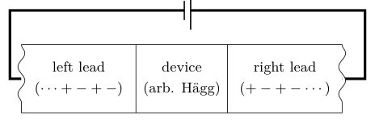
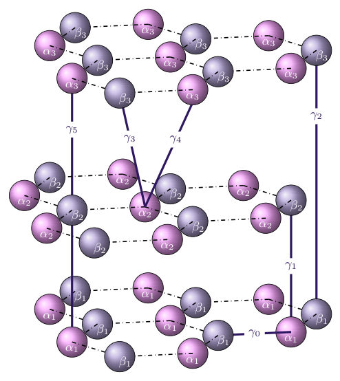
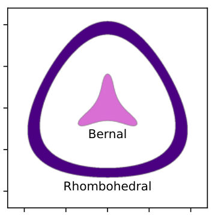
Summary. This paper develops a theoretical framework to calculate the electrical resistance across multilayer graphene stacks, paying special attention to the role of stacking faults. Using the Landauer formalism, the authors show that even metallic graphite structures can exhibit insulating behavior due to Fermi surface mismatch and that disorder leads to strong localization. The work demonstrates that transport measurements are powerful probes of localization-driven physics in graphitic materials.
Why it may be interesting. The strong localization effects observed in the transport measurements provide a concrete, solid-state realization of Anderson localization physics, which is a key topic in disordered systems.
Main problem. To theoretically calculate the c-axis resistance of multilayer graphene stacks, focusing on how stacking faults and disorder affect transport.
Main result. The system exhibits insulating behavior due to Fermi surface mismatch, and the resistance in disordered samples is non-self-averaging, growing exponentially with stack size due to localization.
Method. The study employs the Landauer formalism combined with Green's function techniques to reduce the c-axis transport to an effectively one-dimensional problem.
Model / system. The system is multilayer graphene, modeled using a minimal tight-binding Hamiltonian that accounts for Bernal (ABAB) and rhombohedral (ABC) stacking arrangements.
Key observables. c-axis resistance, transmission probability T(E), and the exponential growth of median resistance with stack size.
Important parameters / regimes. Hopping parameters (gamma_0, gamma_1), Fermi energy (pinned at zero), and stack size (N).
Assumptions / limitations. Translational symmetry is assumed in the lateral (x, y) directions, allowing in-plane momentum k to be a good quantum number.
Figures summary. Figures illustrate the local atomic environment and the general transport setup (Lead-Device-Lead), while equations detail the calculation of self-energies and transmission.
Paper structure. The paper develops a theoretical framework using Green's functions to calculate resistance for various stacking faults, analyzes the resulting localization physics, and compares results for Bernal and rhombohedral structures.
Multilayer graphene exhibits rich possibilities for stacking. While natural bulk graphite predominantly occurs in the Bernal structure, where layers are stacked in an $-ABAB-$ pattern, rhombohedral stacking has sprung to prominence recently. It is well known that Bernal graphite exhibits anisotropic transport, with high resistance to currents along the stacking axis. Careful experiments using pillar geometries have measured out-of-plane resistance, attributing it to stacking faults where planes slip out of the nominal $ABAB$ sequence. The observed resistance shows anomalously large, non-Gaussian, sample-to-sample variations. In this article, we build a theoretical framework to calculate $c$-axis resistance of graphene stacks with an arbitrary stacking arrangement. Our approach builds on the idea that, regardless of stacking sequence, we have in-plane translational symmetry. With in-plane momentum as a good quantum number, $c$-axis transport reduces to an effectively one-dimensional problem that can be addressed using the Landauer paradigm. We calculate the resistances of a variety of simple stacking faults in both Bernal and rhombohedral systems. We also calculate the resistance of a rhombohedral 'slab' embedded between Bernal leads. Remarkably, despite both Bernal and rhombohedral graphite being metallic, the system exhibits insulating behaviour. We attribute this to Fermi surface mismatch. We next calculate the resistance of a multilayer sample with stacking disorder. Resistance is non-self-averaging, akin to a one-dimensional wire where disorder has a strong localizing effect. The median resistance grows exponentially with stack size, indicating insulating character driven by localization. Our results demonstrate that transport measurements on mesoscopic graphitic pillars serve as signatures of stacking faults, and in particular, probe localization-driven physics.
Authors: Azadeh Alavi, Fatemeh Kouchmeshki, Hossein Akhoundi, Yongli Re, Abdolrahman Alavi, Muhammad Usman
Type: both · Category: other · PDF: https://arxiv.org/pdf/2610.21395v1
Analysis basis: full PDF text, analyzed in chunks
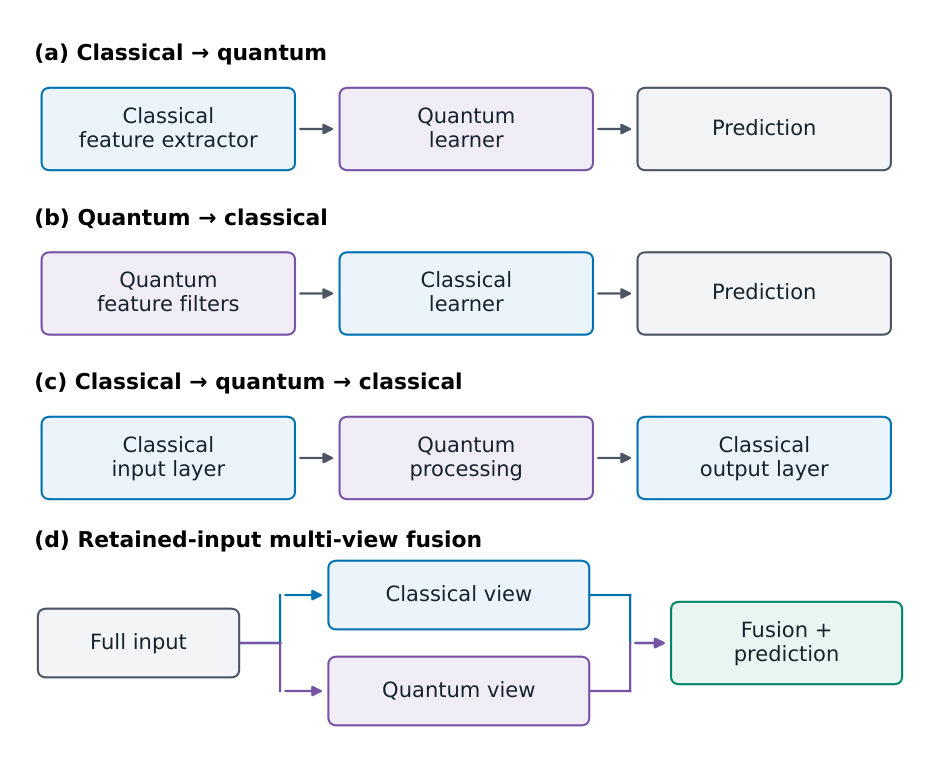
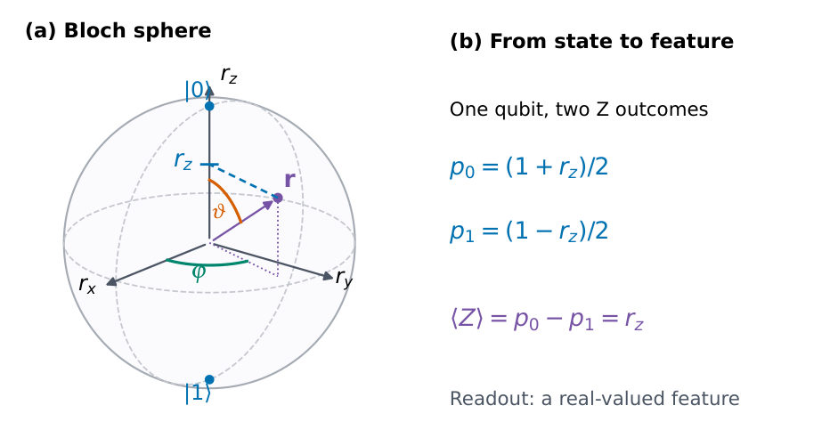

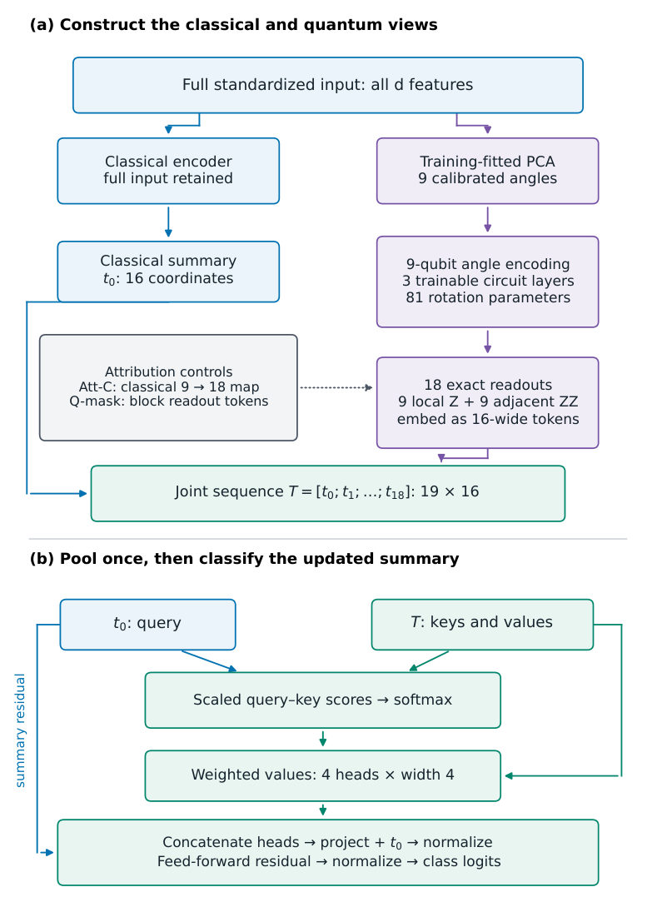
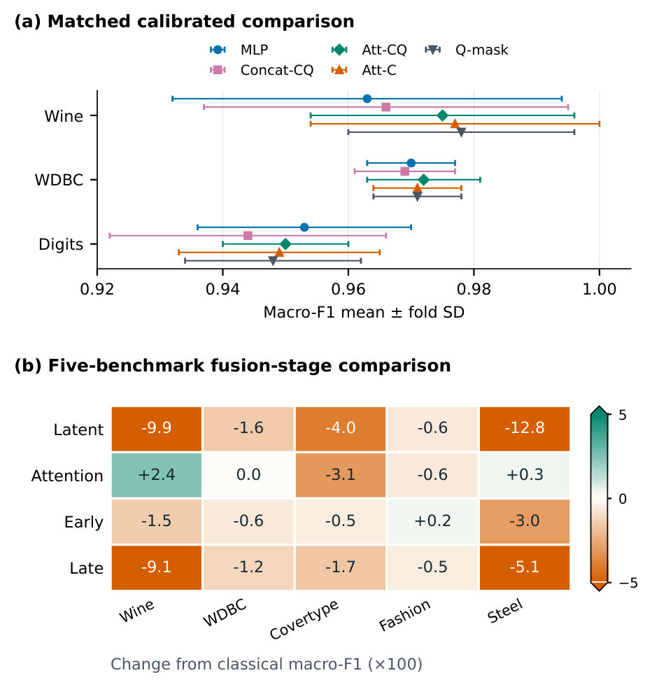
Summary. This paper proposes a multi-view fusion framework to determine when quantum representations enhance classical machine learning predictions. By systematically comparing fusion results against single-view and classical baselines, the authors demonstrate that gains arise specifically when the classical and quantum views capture complementary predictive information. This provides a principled method for assessing the utility of quantum features in practical data analysis.
Why it may be interesting. While the application is ML, the methodology involves simulating quantum feature extraction and rigorously testing the necessity of quantum information for achieving state-of-the-art predictive power, which touches upon quantum information utility.
Main problem. The paper investigates the conditions under which combining classical and quantum feature representations (multi-view fusion) improves predictive performance in machine learning tasks.
Main result. Fusion significantly improves prediction when the classical and quantum views capture complementary predictive relationships, which can be confirmed by controlled comparisons against single-view or classical-only baselines.
Method. A classical–quantum multi-view framework is employed, combining full classical inputs with features derived from simulated quantum circuits using concatenation or attention mechanisms.
Model / system. The model involves a hybrid system where classical data is augmented by features extracted from quantum circuits (using qubits, unitary gates, and expectation values as readouts).
Key observables. Mean predictive performance (e.g., Brier loss, F1 score) across various benchmark datasets (Wine, Fashion-MNIST).
Important parameters / regimes. The degree of complementarity between the classical and quantum feature sets, and the choice of fusion rule (concatenation vs. attention).
Assumptions / limitations. The improvement is attributed to the complementary predictive content of the views, and the analysis relies on controlled comparisons to isolate this gain.
Figures summary. Figure 1 illustrates various hybrid information flows, including the retained-input multi-view fusion setup. Figure 2 details the single-qubit Bloch sphere geometry and the readout process.
Paper structure. The paper introduces the multi-view framework, details the quantum feature generation process, presents controlled synthetic tasks to diagnose complementarity, validates the approach on multiple ML benchmarks, and concludes by establishing guidelines for when quantum views add value.
Recent studies have reported promising results from quantum machine learning in drug discovery, healthcare, materials science and cybersecurity. Research includes comparisons with classical machine learning algorithms and the development of sequential hybrid pipelines. We propose that fusion can improve prediction when classical and quantum representations capture complementary predictive relationships. Our classical-quantum multi-view framework preserves the full classical input alongside simulated quantum features. Concatenation and attention combine the views; single-view comparisons, replacement and masking controls assess both views' contributions. Controlled angular-polynomial experiments distinguish targets adequately represented by a single view from those that depend on complementary angular and polynomial relationships. For these mixed targets, fusion improves prediction by combining the relevant feature sets, while matched classical representations recover the same benefit, linking the improvement to their complementary predictive content. Controlled classification tests further show that gains depend on alignment between the chosen representation and the target, and on a suitable fusion rule. Benchmark validation shows improved mean predictive performance over classical baselines on Wine, Wisconsin Diagnostic Breast Cancer, three-class Fashion-MNIST and Steel Plates Faults within the evaluated protocols. Classical replacement and masking controls remain competitive, classical baselines lead on Digits and Covertype, and outcomes with missing or corrupted views depend on the available inputs. These findings support evaluating quantum representations for their complementary predictive contribution and matching the representation and fusion strategy to the target relationships.
Papers from cond-mat.mtrl-sci, mes-hall, other, soft, supr-con. These archives are de-prioritized — they appear at the end regardless of relevance score.
Authors: D. R. Kazanov, A. V. Poshakinskiy
Type: theory · Category: other · PDF: https://arxiv.org/pdf/2610.20755v1
Analysis basis: full PDF text, analyzed in chunks
Topic relevance: Tavis-Cummings & cavity-many-emitter 3/5 · interference shaping light 3/5 · analog quantum simulation 2/5 · Keldysh / 2PI / non-Gaussian methods 1/5 · correlated / nonlocal dissipation 1/5 · driven-dissipative phase transition 1/5 · methods for driven-dissipative 1/5
Summary. This theoretical study demonstrates that the confined optical modes (WGMs) within a MoS2 nanotube can act as a highly efficient resonator for spontaneous Raman scattering. By exploiting the exciton-induced compression of the WGM spectrum, the system achieves a double resonance matching the phonon energy, leading to massive signal enhancement.
Why it may be interesting. The concept of using confined photonic modes (WGMs) to engineer strong, tunable resonances for inelastic light scattering is highly relevant to quantum optics and cavity QED, suggesting a pathway for enhancing weak quantum signals.
Main problem. The paper investigates the resonant enhancement of spontaneous Raman scattering in a MoS2 nanotube, driven by the nanotube's own optical phonons.
Main result. The system exhibits a double resonance in the TM->TM scattering channel, achieving an enhancement exceeding the non-resonant level by four orders of magnitude without requiring geometric fine-tuning.
Method. The analysis uses electromagnetic calculations to model Whispering-Gallery Modes (WGMs) and calculates the Raman intensity using the incoherent sum formula, incorporating resonance matching factors.
Model / system. The physical system is a multiwall MoS2 nanotube, modeled as a hollow shell supporting TM-polarized WGMs. The core mechanism involves the Free Spectral Range (FSR) of these WGMs sweeping across the intralayer phonon energies near the A exciton.
Key observables. Raman scattering intensity, the matching factor $ ho(\delta)$, and the polarization-dependent scattering channels ($ ext{TM} o ext{TM}$, $ ext{TM} o ext{TE}$, etc.).
Important parameters / regimes. Phonon energies ($ ext{A}{1 ext{g}}$, $ ext{E}$), the exciton energy, and the detuning parameter $\delta$.}}$, $ ext{E}_{2 ext{g}
Assumptions / limitations. The analysis separates the problem into TM and TE polarizations, treating the nanotube as a hollow shell, and uses the assumption of double resonance when phonon energy matches the FSR.
Figures summary. Figures illustrate the setup showing the pumping and scattering process, and show the FSR of the WGM pair versus phonon energy, demonstrating the compression and self-tuning effect.
Paper structure. The paper establishes the physical model using WGMs, derives the resonance condition based on the FSR matching the phonon energy, analyzes the intensity using the matching factor $ ho(\delta)$, and finally compares the enhancement across different polarization channels.
The whispering-gallery modes confined in the wall of a multiwall MoS$_2$ nanotube resonantly enhance the spontaneous Raman scattering by its own optical phonons. The enhancement is doubly resonant --- pump and Stokes waves hit two adjacent modes at one pump energy, and the signal scales as $(Q_{\rm pump}Q_{\rm sc})^2$ - whenever a phonon energy matches the free spectral range of the mode ladder. Near the A exciton the excitonic dispersion compresses the ladder and sweeps its spacing through all intralayer phonon energies of MoS$_2$, so the match, reached for $A_{1g}$ at $E_{\rm pump}=1551$~meV, requires no geometric tuning. A missed match splits the excitation peak into a pump- and a scattered-resonant doublet whose splitting measures the residual detuning. Selection rules confine the double resonance to the TM$\to$TM channel and exclude $E_{1g}$.
Authors: Konrád Kandrai, András Balogh, Dóra Varga, Márton Szendrő, András Pálinkás, József Cserti, János Koltai, Krisztián Márity, Péter Vancsó, Géza I. Márk, Alexandre Mayer, Zoltán Tajkov, Levente Tapasztó, Péter Nemes-Incze
Type: both · Category: other · PDF: https://arxiv.org/pdf/2610.20905v1
Analysis basis: full PDF text, analyzed in chunks
Topic relevance: interference shaping light 3/5 · analog quantum simulation 2/5 · Keldysh / 2PI / non-Gaussian methods 1/5 · driven-dissipative phase transition 1/5 · methods for driven-dissipative 1/5 · non-equilibrium universality 1/5 · quantum measurements 1/5
Summary. This work demonstrates that stacking faults in rhombohedral graphite can function as one-way electron mirrors for electrons. By combining STM measurements with detailed electronic structure calculations, the authors attribute this directional asymmetry to mode selection at the domain wall. This establishes a novel, structure-defined building block for electron optics in condensed matter systems.
Why it may be interesting. The concept of engineered, symmetry-preserving directional transport in solid-state systems is highly relevant to quantum optics and open quantum systems, offering a solid-state analogue to photonic diodes.
Main problem. The paper addresses the challenge of creating a condensed matter platform that functions as a one-way electron mirror without violating fundamental symmetries like linearity or time-reversal symmetry.
Main result. Single-layer stacking shifts in rhombohedral graphite successfully act as one-way electron mirrors, demonstrated by observing interference fringes only on the stacking fault side of the boundary.
Method. The study combines Scanning Tunneling Microscopy (STM) measurements (QPI) with advanced theoretical calculations, including layer-resolved tight-binding and wave-packet dynamics.
Model / system. The physical system is six-layer rhombohedral graphite containing stacking faults, which are modeled using electronic structure calculations and analyzed via STM measurements.
Key observables. Appearance and tracking of 10 nm scale interference fringes in the Local Density of States (LDOS), and the asymmetry in electron scattering across the domain wall.
Important parameters / regimes. The asymmetry is attributed to mode selection, which is controlled by the selective coupling provided by the STM tip.
Assumptions / limitations. The primary assumption is that the asymmetry arises from mode selection due to the mismatched layer polarization across the stacking fault, rather than a symmetry-breaking potential.
Figures summary. Figures show schematic atomic structures of the graphite domains, STM dI/dV maps revealing standing waves in the LDOS on the fault side, and plots analyzing the energy dependence of these interference fringes.
Paper structure. The paper establishes the need for a symmetric one-way mirror, presents STM evidence of asymmetric scattering in graphite stacking faults, and then uses tight-binding and wave-packet calculations to theoretically explain the asymmetry via mode selection.
One-way mirrors or asymmetric scatterers are key components of photonic systems, protecting sources from back-reflections and routing light along a chosen path. Acoustic systems can also be engineered to show asymmetric reflection. However, a condensed matter platform acting as a one-way mirror without breaking linearity, time-reversal symmetry or energy conservation has been lacking. One route to achieving this is mode selection, where a probe coupled to only some modes sees a boundary as a mirror from one side and as transparent from the other. Here we show that single-layer stacking shifts in six-layer rhombohedral graphite provide this platform, acting as one-way mirrors for electrons. In scanning tunneling microscopy, 10 nm scale interference fringes appear only on the stacking fault side of a wall, tracking its Dirac band, the rhombohedral side remaining transparent. Layer-resolved tight-binding and wave-packet dynamics calculations reproduce this and trace the asymmetry to the mismatched layer polarization across the wall, with the tip supplying the selective coupling. Because stacking solitons glide under external fields, this mirror forms a movable element of electron optics defined by the crystal structure alone.
Authors: Lihong Ao, Aymeric Ramiere
Type: both · Category: other · PDF: https://arxiv.org/pdf/2610.21130v1
Analysis basis: full PDF text, analyzed in chunks
Topic relevance: analog quantum simulation 2/5 · Frenkel-Kontorova 1/5 · Keldysh / 2PI / non-Gaussian methods 1/5 · driven-dissipative phase transition 1/5 · methods for driven-dissipative 1/5 · non-equilibrium universality 1/5 · scars & prethermalization 1/5

Summary. This paper introduces Discontinuous-Property Mechanical Metamaterials (DPMMs) to create a rigorous geometric-mechanics framework for studying lattice systems with sharp, discontinuous mechanical properties. By extending band theory to account for contact-induced discontinuities, the authors demonstrate how these sharp transitions can be exploited for advanced nonlinear wave manipulation. The work provides both a theoretical framework and a proof-of-concept experiment validating the concept.
Why it may be interesting. While focused on classical mechanics, the mathematical techniques used—analyzing systems across non-smooth parameter boundaries ($\Sigma$) and deriving effective Hamiltonians for non-smooth potentials—share conceptual parallels with analyzing quantum systems undergoing quantum phase transitions or involving strong coupling limits.
Main problem. The work establishes a geometric-mechanics framework for analyzing discontinuous lattice systems using Discontinuous-Property Mechanical Metamaterials (DPMMs). It aims to characterize and harness sharp transitions in mechanical metamaterials for nonlinear wave manipulation.
Main result. The framework successfully analyzes the system's response by extending band theory to include complementary constraints imposed by mechanical contacts, demonstrating phenomena like nonlinear wave mixing and mode conversion.
Method. The analysis involves extending band theory via geometric regularization, solving eigenvalue problems in both time and frequency domains, and analyzing the system's behavior across a parameter-space discontinuity set ($\Sigma$).
Model / system. The system is the DPMM, a periodic structure whose dynamics are governed by the solid-mechanics equation, incorporating unilateral Signorini contact conditions. The analysis treats the contact force as the source of discontinuity in the stiffness.
Key observables. Discontinuous stiffness and Poisson's ratio, nonlinear wave mixing, mode conversion, and the density of states (DOS) for wave propagation.
Important parameters / regimes. Material parameters like density ($ ho$), Young's modulus ($E$), and Poisson's ratio ($ u$); the system is analyzed near the discontinuity set ($\Sigma$).
Assumptions / limitations. Assumptions include the bulk material being an ordinary isotropic solid, and the analysis relies on geometric descriptions of the discontinuity set ($\Sigma$) and transversality conditions.
Figures summary. Figures illustrate the schematic of contact stiffness discontinuity and show the Phonon density of states (DOS) calculated for different contact states.
Paper structure. The paper develops the framework by first introducing the governing equations (Navier equation, contact mechanics) and then extending band theory to handle the non-smooth dynamics. It analyzes static, modal, and transient responses, culminating in a proof-of-concept experiment.
Discontinuity, as the extreme limit of nonlinearity, is common in macroscopic continuum systems. This work introduces discontinuous-property mechanical metamaterials (DPMMs) as a prototype for establishing a geometric-mechanics framework for discontinuous lattice systems. We extend band theory to systems with complementary constraints through geometric regularization and analyze modal discontinuities. By analyzing its static, modal, and transient responses, we validated discontinuous stiffness and Poisson's ratio, alongside intense nonlinear wave mixing and mode conversion. A proof-of-concept experiment demonstrates the practical feasibility of implementing DPMMs. This work characterizes discontinuous lattice systems through the intuitive DPMM concept and provides a practical framework to harness sharp transitions in mechanical metamaterials for nonlinear wave manipulation.
Authors: D. Miguélez-Caballero, S. Navarro-Obregón, Muneto Nitta, Keisuke Ohashi
Type: theory · Category: other · PDF: https://arxiv.org/pdf/2610.21930v1
Analysis basis: full PDF text, analyzed in chunks
Topic relevance: analog quantum simulation 2/5 · Keldysh / 2PI / non-Gaussian methods 1/5
Summary. This theoretical paper studies vortex structures in a modified Abelian-Higgs model characterized by two disconnected vacuum states. The research finds that the model exhibits novel type-1.5-like interactions, causing inner-vacuum vortices to cluster and outer-vacuum vortices to form confined, bubble-like structures. This demonstrates how multiple broken vacua enrich soliton physics beyond standard models.
Why it may be interesting. The study of topological defects and their interactions in generalized field theories provides theoretical frameworks relevant to understanding phase transitions and defect dynamics in condensed matter systems, which shares mathematical structure with some AMO phenomena.
Main problem. The paper investigates the complex behavior of topological defects, specifically vortices, within a modified Abelian-Higgs model.
Main result. The model exhibits type-1.5-like behavior, leading to the formation of stable vortex clusters (inner-vacuum) and composite vortex-filled bubbles confined by domain walls (outer-vacuum).
Method. The authors analytically construct the domain wall, derive asymptotic interaction energies, and analyze the fluctuation spectra of coincident multivortices to determine stability.
Model / system. The system is a single-component Abelian-Higgs model featuring an eighth-order scalar potential, resulting in a vacuum manifold with two disconnected circles ($|\phi|=1$ and $|\phi|=\sigma$).
Key observables. Nonmonotonic intervortex interactions, bound states, cluster formation, and the existence of vortex-filled bubbles.
Important parameters / regimes. The vacuum manifold parameter $\sigma$, and the interaction energy dependence on separation $d$.
Assumptions / limitations. The analysis relies on the static, axially-symmetric $n$-vortex ansatz and the effective source description for interaction energy.
Figures summary. Figures illustrate the potential $U_\sigma(|\phi|^2)$ showing two vacuum manifolds, and radial profiles of fields for inner-vortex clusters and outer-vortex filled bubbles.
Paper structure. The paper introduces the model, identifies the two vortex species, and then proceeds to analyze the interactions, deriving the domain wall structure and analyzing the stability spectra of coincident multivortices.
We investigate a single-component Abelian-Higgs model with an eighth-order scalar potential whose vacuum manifold consists of two disconnected circles. The model supports two species of vortices and domain walls interpolating between the two vacuum components. We find type-1.5-like behavior characterized by nonmonotonic intervortex interactions and bound states of spatially separated vortices. Inner-vacuum vortices form clusters through short-range repulsion and long-range attraction, whereas outer-vacuum vortices form vortex-filled bubbles in which a closed domain wall confines multiple inner-vacuum-vortex cores. We construct the domain wall analytically, derive the asymptotic vortex-wall interactions, and analyze the fluctuation spectra of coincident multivortices to identify their splitting instabilities.
Authors: Tatiana Latychevskaia, Pengru Huang, Kostya S. Novoselov
Type: both · Category: other · PDF: https://arxiv.org/pdf/2610.21542v1
Analysis basis: full PDF text, analyzed in chunks
Topic relevance: quantum measurements 2/5
Summary. This work demonstrates that Convergent Beam Electron Diffraction (CBED) can achieve atomic-precision imaging of defects in 2D crystals like graphene using a single-shot measurement. By simulating defect-specific 'fingerprint' patterns and employing iterative phase retrieval, the authors can uniquely identify defects and reconstruct the precise atomic arrangement within the material.
Why it may be interesting. While primarily focused on materials characterization, the core methodology—recovering complex phase information (atomic positions) from limited intensity measurements using iterative algorithms—shares conceptual overlap with phase retrieval techniques used in quantum optics and quantum state tomography.
Main problem. To achieve atomic-precision imaging and characterize individual defects within two-dimensional (2D) crystalline materials.
Main result. Convergent Beam Electron Diffraction (CBED) patterns generate unique, localized 'fingerprint' patterns for specific defects, allowing for their unambiguous identification and reconstruction of atomic positions.
Method. The study combines Density Functional Theory (DFT) simulations for defect geometry with CBED pattern simulations and iterative phase retrieval algorithms to reconstruct real-space atomic positions from single-shot intensity measurements.
Model / system. The system under study is 2D materials, such as graphene, containing various atomic defects (e.g., vacancies, Stone-Wales defects). The analysis is performed using the principles of electron diffraction theory.
Key observables. Unique 'fingerprint' CBED patterns for specific defects, and reconstructed atomic positions with sub-Angstrom accuracy.
Important parameters / regimes. Simulation parameters include 80 keV electrons and a semi-convergence angle of 7 mrad; the reconstruction requires satisfying oversampling and specific sampling conditions.
Assumptions / limitations. The reconstruction process relies on iterative phase retrieval algorithms, which require specific constraints (e.g., positive phase, support mask) to converge correctly.
Figures summary. Figures illustrate the CBED scheme, showing simulated patterns for various defects, and detail the reconstruction process by visualizing atomic displacements and the comparison between reconstructed and unrelaxed lattice structures.
Paper structure. The paper details the theoretical framework for simulating CBED patterns using DFT inputs, presents the methodology for iterative phase retrieval from single-shot intensity data, and validates the technique by showing defect fingerprinting and atomic position reconstruction.
Convergent beam electron diffraction (CBED), recently demonstrated on two-dimensional (2D) materials, offers a number of interesting applications such as imaging atomic in- and out-of plane shifts, interlayer distances, and individual adsorbates. In this study, we show how CBED allows for atomic-precision imaging of individual defects in 2D materials using one single-shot intensity measurement. In combination with structural calculations using density functional theory, we present simulated CBED patterns for various defects in graphene, each of which exhibits a unique fingerprint distribution. We also show how atomic positions, including the individual atomic defects in graphene, can be reconstructed by iterative phase retrieval from a single CBED pattern.
Authors: Vassilios M. Rothos
Type: theory · Category: other · PDF: https://arxiv.org/pdf/2610.22166v1
Analysis basis: full PDF text, analyzed in chunks
Topic relevance: Frenkel-Kontorova 1/5 · Keldysh / 2PI / non-Gaussian methods 1/5 · analog quantum simulation 1/5
Summary. This work provides a rigorous mathematical framework to find localized, standing wave solutions (homoclinic waves) for discrete nonlinear Schrödinger equations with finite-range interactions. It establishes that the monotonic ordering of the coupling coefficients is the precise structural condition required to maintain the positivity and unimodality of the solution profile. The method successfully links variational energy maximization to the existence of exponentially localized states.
Why it may be interesting. The rigorous mathematical treatment of localization and stability in nonlinear lattice models, particularly the identification of structural conditions (like kernel ordering) governing the existence of localized states, is highly relevant to understanding energy transport and defect dynamics in quantum systems.
Main problem. The paper develops a variational framework to prove the existence and characterize the properties of positive homoclinic standing waves in discrete nonlinear Schrödinger (DNLS) equations with cooperative finite-range interactions.
Main result. The structural condition $a_1 \ge a_2 \ge \cdots \ge a_M \ge 0$ is necessary and sufficient for the projected gradient flow to preserve the unimodal cone, leading to exponentially localized homoclinic solutions.
Method. The authors employ a constrained-power variational method, utilizing projected gradient flow dynamics and approximating the infinite lattice problem via periodic boundary conditions before taking the limit.
Model / system. The system is a one-dimensional DNLS lattice with a finite interaction range $M$, governed by a Hamiltonian derived from cooperative, finite-range coupling coefficients $a_m$.
Key observables. Homoclinic standing wave profiles, spectral gaps, exponential decay rates ($\mu$), and the invariance of the unimodal cone.
Important parameters / regimes. The interaction coefficients $a_m$, the power constraint $ ho$, and the ratio of the nonlinear term to the linear spectral edge ($T_\infty( ho) > 2A$).
Assumptions / limitations. The analysis relies on the existence of the unimodal cone $C$ and the strict maximum condition ($T_\infty( ho) > \Lambda$) to ensure compactness in the infinite-period limit.
Figures summary. Figures illustrate the spectral gap opening, the convergence of periodic maximizers to the homoclinic limit ($\ell_2$ deviation and frequency convergence), and the necessity of the ordering condition on the coupling coefficients.
Paper structure. The paper establishes the variational setting, proves cone invariance based on the kernel ordering, derives the localization criterion via the spectral gap, and finally confirms the existence of the homoclinic limit by passing from periodic to infinite-period constrained maximizers.
We develop a constrained-power variational framework for positive homoclinic standing waves in one-dimensional discrete nonlinear Schrödinger equations with cooperative finite-range interactions. Starting from periodic lattices, we construct constrained energy maximizers and use the associated projected gradient flow to establish positive invariance of the cone of nonnegative, even, and unimodal profiles. A central result is that the monotone ordering of the interaction coefficients, \(a_1\ge a_2\ge\cdots\ge a_M\ge0\), with \(a_1>0\), provides the structural condition ensuring preservation of this cone under finite-range coupling. Under a strict maximum condition above the linear spectral edge, we obtain a uniform frequency gap and period-independent exponential localization. These estimates provide the compactness required for the infinite-period limit and yield positive, even, unimodal, and exponentially localized homoclinic standing waves as strong \(\ell^2(\mathbb Z)\)-limits of periodic constrained maximizers. Numerical computations for several interaction ranges and cooperative kernels illustrate the effects of extended coupling on dispersion and localization and support the periodic-to-homoclinic convergence predicted by the analysis.
Authors: Yui Nagayama, Masaharu Nagayama, Hiroshi Ishii
Type: theory · Category: statistical mechanics · PDF: https://arxiv.org/pdf/2610.21398v1
Analysis basis: full PDF text, analyzed in chunks
Topic relevance: Frenkel-Kontorova 1/5 · driven-dissipative phase transition 1/5 · non-equilibrium universality 1/5
Summary. This paper analyzes pattern formation in a nonlocal advection-reaction-diffusion equation by studying Turing bifurcations. It uses advanced mathematical techniques, including center manifold reduction, to determine the criticality of the bifurcation based on the interaction kernel. The findings demonstrate that the system can exhibit complex multistability involving stable stationary and time-periodic patterns.
Why it may be interesting. While the model is classical PDE-based, the study of pattern formation, stability, and phase transitions (like Turing bifurcations) in reaction-diffusion systems is a core topic in non-equilibrium statistical mechanics.
Main problem. The paper investigates the relationship between the properties of the interaction kernel and the criticality of Turing bifurcations in a nonlocal advection-reaction-diffusion equation.
Main result. The analysis establishes criteria based on the amplitude equation's cubic coefficient to determine if the bifurcation is supercritical or subcritical, confirming the possibility of multistability.
Method. The study employs linear stability analysis, center manifold reduction to derive an amplitude equation, and numerical bifurcation analysis.
Model / system. The model is a nonlocal advection–reaction–diffusion equation with logistic growth, posed on a finite interval with periodic boundary conditions.
Key observables. Turing bifurcation point, existence of nonhomogeneous stationary solutions, and the co-existence of stable homogeneous, nonhomogeneous stationary, or time-periodic solutions.
Important parameters / regimes. The diffusion coefficient ($d$), growth rate ($c$), and the properties of the interaction kernel ($K$).
Assumptions / limitations. The analysis relies on the assumption that the spectrum of the linearized operator crosses zero only at a single mode ($n=N$) at the bifurcation point.
Paper structure. The paper proceeds by analyzing the stationary problem using Fourier series and linear operators, applying the Crandall–Rabinowitz theorem to prove local existence of bifurcating solutions, deriving a reduced amplitude equation via center manifold reduction, and finally using numerical methods to confirm multistability.
This paper considers a nonlocal advection--reaction--diffusion equation with logistic growth. We investigate how the interaction kernel affects the criticality of Turing bifurcations and the associated multistability. We first prove that nonhomogeneous stationary solutions bifurcate from the positive homogeneous stationary solution. Center manifold reduction yields an amplitude equation near the bifurcation point. This equation provides criteria for supercritical and subcritical bifurcations in terms of the Fourier transform of the interaction kernel. We also derive a sufficient condition for subcriticality. This condition can be satisfied by sufficiently localized attractive interactions. Based on these analytical results, we investigate multistability through numerical bifurcation analysis. The numerical results show that the stable homogeneous stationary solution can coexist with stable nonhomogeneous stationary solutions or stable time-periodic solutions.
Authors: Moeen ud din, Tsun-Sung Kuo, Yun-Chen Liao, Akhilesh Kr. Singh, Uddipta Kar, Wei-Li Lee, Guang-Yu Guo
Type: both · Category: other · PDF: https://arxiv.org/pdf/2610.21163v1
Analysis basis: full PDF text, analyzed in chunks
Topic relevance: Keldysh / 2PI / non-Gaussian methods 1/5 · analog quantum simulation 1/5
Summary. This work demonstrates that lattice mismatch strain is a powerful tool for tuning superconductivity in $ ext{RuO}_2$ thin films. By combining experiments and theory, the authors show that compressive strain enhances the electron-phonon coupling ($\lambda$) through phonon softening. This mechanism provides a clear, tunable pathway for engineering superconducting materials.
Why it may be interesting. While focused on superconductivity, the mechanism relies heavily on coupling between electronic states and lattice vibrations (phonons), which is a core concept in many-body physics relevant to open quantum systems and material characterization.
Main problem. The study investigates how lattice mismatch strain can enhance phonon-mediated superconductivity in $ ext{RuO}_2$ thin films.
Main result. Compressive strain significantly enhances the electron-phonon coupling ($\lambda$) by softening low-energy phonon modes, leading to a calculated $T_c$ that agrees well with experimental observations.
Method. The research combines experimental transport measurements with advanced ab initio calculations using the McMillan-Allen-Dynes formalism.
Model / system. The physical system is $ ext{RuO}_2$ thin films grown epitaxially on $ ext{TiO}_2$ substrates, studied for both (110) and (100) orientations.
Key observables. Superconducting critical temperature ($T_c$), electron-phonon coupling strength ($\lambda$), and phonon dispersion relations.
Important parameters / regimes. Compressive strain ($\epsilon_{[001]}$), film thickness ($t$), and the Fermi level ($E_F$).
Assumptions / limitations. The theoretical analysis uses the strained-bulk approach for thicker films and relies on the McMillan formalism for superconductivity.
Figures summary. Figures show XRD scans confirming film growth, resistivity vs. temperature curves showing superconductivity, and theoretical plots detailing phonon dispersions, DOS, and the enhancement of $\lambda$ with strain.
Paper structure. The paper progresses from experimental observation of superconductivity in $ ext{RuO}_2$ films to theoretical modeling, demonstrating how strain modifies the electronic structure (DOS) and vibrational properties (phonon softening), ultimately predicting enhanced $T_c$.
We investigate the superconducting properties of RuO$_2$ films grown on TiO$_2$ substrates by combining film fabrication and transport measurement with \textit{ab initio} calculation. Experimentally, we grow several RuO$_2$ (110) thin films on TiO$_2$ (110) substrates and observe superconductivity with critical temperature ($T_c$) of $\sim$2.0 K in 20-nm and 30-nm RuO$_2$ (110) thin films. Theoretically, we study the superconductivity in both RuO$_2$ (110) and RuO$_2$ (100) epitaxial films within McMillan formalism of isotropic Migdal-Eliashberg theory. Among the salient results, the calculated phonon dispersion relations of all the considered RuO$_2$ films show that the epitaxial films are dynamically stable. Importantly, our \textit{ab initio} calculations reveal that independent of the film orientation, the [001] compressive strain $ε_{[001]}$ pushes the flat Ru $d_{z^2}$-dominant bands towards the Fermi level ($E_F$), and significantly soften the out-of-plane acoustic phonon mode near the R point in the Brillouin zone, which substantially enhances the electron-phonon coupling (EPC) strength $λ$ and hence the calculated $T_c$ in the RuO$_2$ films. Remarkably, the amount of the phonon softening and the enhanced $T_c$ increase almost linearly with the increasing $ε_{[001]}$. The calculated $T_c$ for the films with thickness of $\geq$ 20 nm agree well with the experimental $T_c$. These findings demonstrate that among other things, lattice mismatch strain provides an effective route for tuning phonon-mediated superconductivity in RuO$_2$ and other thin films.
Authors: Rostyslav O. Serha, Jan Hofer, Khrystyna O. Levchenko, Andreas Ney, Sergej O. Demokritov, Gunther Springholz, Andrii V. Chumak
Type: experiment · Category: other · PDF: https://arxiv.org/pdf/2610.21733v1
Analysis basis: full PDF text, analyzed in chunks
Topic relevance: analog quantum simulation 1/5
Summary. This work characterizes the magnetic properties of EuSe thin films, focusing on magnon damping down to millikelvin temperatures. Using broadband FMR, the authors demonstrate that EuSe exhibits remarkably low magnon losses, suggesting its potential as a superior material for next-generation quantum magnonics and hybrid quantum devices.
Why it may be interesting. The extremely low, temperature-independent magnon damping observed at millikelvin temperatures provides a platform for studying coherent quantum dynamics in solid-state magnetic systems, relevant to quantum information storage and processing.
Main problem. The central goal is to find magnetic materials with extremely low magnon damping at millikelvin temperatures for use in quantum magnonics.
Main result. EuSe films exhibit significantly low magnon damping ($\alpha_{eff} \le 1.1 imes 10^{-3}$) at 30 mK, which is highly promising for hybrid quantum systems.
Method. The study uses broadband Ferromagnetic Resonance (FMR) measurements, complemented by magnetometry, across temperatures from 10 K down to 30 mK.
Model / system. The physical system is an epitaxial film of the metamagnet EuSe grown on a diamagnetic BaF2 substrate. The material is characterized by its magnetic phases (AFM, FiM, FM) and its intrinsic magnetic excitations (magnons).
Key observables. FMR linewidth ($\Delta B$), magnon lifetime ($ au$), saturation magnetization ($M_{sat}$), and the Gilbert damping parameter ($\alpha$).
Important parameters / regimes. Temperatures down to 30 mK, frequencies up to 68 GHz, and a low upper bound for the damping parameter ($1.1 imes 10^{-3}$).
Assumptions / limitations. The intrinsic linewidth calculation requires correction factors, and the analysis assumes the system behaves like an in-plane magnetized film for Kittel fits.
Figures summary. Figures illustrate the H-T phase diagram, static magnetization sweeps showing metamagnetic transitions, and FMR transmission dips used to extract the intrinsic linewidth as a function of frequency and temperature.
Paper structure. The paper first establishes the need for low-loss magnetic materials. It then details the experimental characterization using FMR and magnetometry across a wide temperature range, presenting results showing the temperature-independent, low-damping behavior of EuSe at cryogenic temperatures.
The rapid development of quantum magnonics over the past decade has created a demand for magnetic materials that keep their magnon losses low at millikelvin temperatures and add functionality beyond that of the established iron garnets and ferromagnetic metals. The europium chalcogenides are natural candidates $-$ they are magnetic semiconductors whose moment of $7\,μ_{\mathrm{B}}$ per Eu$^{2+}$ ion stems from a half-filled $4f$ shell with zero orbital momentum, so that spin-orbit coupling and intrinsic damping are expected to be weak. Here we characterize an epitaxial film of the metamagnet EuSe on diamagnetic BaF$_2$ by magnetometry and broadband ferromagnetic resonance from 10 K down to 30 mK. EuSe combines a saturation magnetization of 1100 kA/m with antiferromagnetic, ferrimagnetic and ferromagnetic phases that are reached with fields below 0.25 T. In contrast to a Gilbert-damped ferromagnet, the linewidth of the field-aligned film decreases with increasing frequency and field, and below 750 mK it no longer depends on temperature. At 30 mK, 68 GHz and 1.8 T, it reaches 5.5 mT, close to the values of bulk single crystals, which corresponds to a magnon lifetime of 2 ns and to an upper bound of $1.1\times10^{-3}$ for the Gilbert damping parameter. These properties make EuSe and the europium chalcogenides promising materials for hybrid quantum systems and quantum magnonics.
← Index · ← Previous · Next →